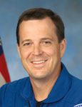
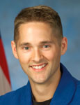

|
NAME: | Joseph M.. Acaba, Educator Mission Specialist |
| BIRTHDATE/PLACE: | May 17, 1967 - Inglewood, CA | |
| RESIDENCE: | Dunnellon, FL | |
| EDUCATION: | Esperanza High School, Anaheim, CA, 1985 B.S., Geology, University of California-Santa Barbara, 1990 M.S., Geology, University of Arizona, 1992 |
|
| PREVIOUS POSITION: | Earth & Space Science/Math Teacher Dunnellon Middle School Dunnellon, FL |
|
| Full Biographical Data |
|  | NAME: | Richard R. Arnold II, Educator Mission Specialist |
| BIRTHDATE/PLACE: | November 26, 1963 - Cheverly, MD | |
| RESIDENCE: | Bucharest, Romania | |
| EDUCATION: | B.S., Accounting, Frostburg State University, MD, 1985 M.S., Marine, Estuarine & Environmental Science, University of Maryland, 1992 |
|
| PREVIOUS POSITION: | Science/Math Teacher American International School of Bucharest Bucharest, Romania |
|
| Full Biographical Data |
| NAME: | Randolph J. Bresnik, Major, USMC, Pilot | |
| BIRTHDATE/PLACE: | September 11, 1967 - Fort Knox, KY | |
| RESIDENCE: | San Diego, CA | |
| EDUCATION: | B.S., Mathematics, The Citadel, 1989 M.S.. Aviation Systems, University of Tennessee-Knoxville, 2002 |
|
| PREVIOUS POSITION: | Operations Officer & F/A-18 Pilot VMFA-232 MCAS Miramar San Diego, CA |
|
| Full Biographical Data |
| NAME: | Christopher J. Cassidy, Lieutenant Commander, USN, Mission Specialist | |
| BIRTHDATE/PLACE: | January 4, 1970 - Salem, MA | |
| RESIDENCE: | Norfolk, VA | |
| EDUCATION: | York High School, York, ME B.S., Mathematics, U.S. Naval Academy, 1993 M.S., Ocean Engineering, Massachusetts Institute of Technology, 2000 |
|
| PREVIOUS POSITION: | Commander, Naval Special Warfare Task Unit Afghanistan |
|
| Full Biographical Data |
|  | NAME: | James P. Dutton, Jr., Major, USAF, Pilot |
| BIRTHDATE/PLACE: | November 20, 1968 - Eugene, OR | |
| RESIDENCE: | Edwards, CA | |
| EDUCATION: | Henry D. Sheldon High School, Eugene, OR B.S., Astronautical Engineering, U.S. Air Force Academy, 1991 M.S., Aeronautics & Astronautics, University of Washington, 1994 |
|
| PREVIOUS POSITION: | F/A-22 Test Pilot 411th Flight Test Squadron Edwards AFB, CA |
|
| Full Biographical Data |
| NAME: | Jose M. Hernandez, Mission Specialist | |
| BIRTHDATE/PLACE: | August 7, 1962 - French Camp, CA | |
| RESIDENCE: | Houston, TX | |
| EDUCATION: | B.S., Electrical Engineering, University of the Pacific,
1984 M.S., Electrical & Computer Engineering, University of California-Santa Barbara, 1986 |
|
| PREVIOUS POSITION: | Chief, Materials & Processes Branch NASA Johnson Space Center Houston, TX |
|
| Full Biographical Data |
 |
NAME: | Robert S. Kimbrough, Major, USA, Mission Specialist |
| BIRTHDATE/PLACE: | June 4, 1967 - Killeen, TX | |
| RESIDENCE: | League City, TX | |
| EDUCATION: | The Lovett School, Atlanta, GA B.S., Aerospace Engineering, U.S. Military Academy, 1989 M.S., Operations Research, Georgia Institute of Technology, 1998 |
|
| PREVIOUS POSITION: | Shuttle Training Aircraft Flight Simulation Engineer U.S. Army NASA Detachment NASA Johnson Space Center Houston, TX |
|
| Full Biographical Data |
 |
NAME: | Thomas H. Marshburn, M.D., Mission Specialist |
| BIRTHDATE/PLACE: | August 29, 1960 - Statesville, NC | |
| RESIDENCE: | Houston, TX | |
| EDUCATION: | B.S., Physics, Davidson College, NC, 1982 M.S., Engineering Physics, University of Virginia, 1984 M.D., Wake Forest University, 1989 M.S., Medical Science, University of Texas Medical Branch, 1997 |
|
| PREVIOUS POSITION: | Flight Surgeon NASA Johnson Space Center Houston, TX |
|
| Full Biographical Data |
 |
NAME: | Dorothy M. Metcalf-Lindenburger, Educator Mission Specialist |
| BIRTHDATE/PLACE: | May 2, 1975 - Colorado Springs, CO | |
| RESIDENCE: | Vancouver, WA | |
| EDUCATION: | Fort Collins High School, Fort Collins, CO B.A, Geology, Whitman College, WA, 1997 |
|
| PREVIOUS POSITION: | Science Teacher/Cross Country Coach Hudson's Bay High School Vancouver, WA |
|
| Full Biographical Data |
| NAME: | Robert L. Satcher, Jr., Ph.D., M.D., Mission Specialist | |
| BIRTHDATE/PLACE: | September 22, 1965 - Hampton, VA | |
| RESIDENCE: | Oak Park, IL | |
| EDUCATION: | Denmark-Olar High School, Denmark, SC B.S., Chemical Engineering, Massachusetts Institute of Technology,1986 Ph.D., Chemical Engineering, Massachusetts Institute of Technology,1993 M.D., Harvard University, 1994 |
|
| PREVIOUS POSITION: | Assistant Professor Department of Orthopaedic Surgery Northwestern University, The Feinberg School of Medicine Chicago, IL |
|
| Full Biographical Data |
| NAME: | Shannon Walker, Ph.D., Mission Specialist | |
| BIRTHDATE/PLACE: | June 4, 1965 - Houston, TX | |
| RESIDENCE: | Seabrook, TX | |
| EDUCATION: | B.A, Physics, Rice University, 1987 M.S., Space Physics, Rice University, 1992 Ph.D., Space Physics, Rice University, 1993 |
|
| PREVIOUS POSITION: | Acting Manager, On-Orbit Engineering Office NASA Johnson Space Center Houston, TX |
|
| Full Biographical Data |
| NAME: | Satoshi Furukawa, Ph D., M.D. | |
| BIRTHDATE/PLACE: | 1964 - Yokohama, Kanagawa, Japan | |
| EDUCATION: | M.D., University of Tokyo, 1989 Ph D., Medical Science, University of Tokyo, 2000 |
|
| JAXA Astronaut | ||
| Full Biographical Data |
| NAME: | Akihiko Hoshide | |
| BIRTHDATE/PLACE: | 1968 - Tokyo, Japan | |
| EDUCATION: | B.S., Mechanical Engineering, Keio University, 1992 M.S., Aerospace Engineering, University of Houston Cullen College of Engineering, 1997 |
|
| JAXA Astronaut | ||
| Full Biographical Data |
| NAME: | Naoko Yamazaki | |
| BIRTHDATE/PLACE: | 1970 - Matsudo City, Chiba, Japan | |
| EDUCATION: | B.S., Aerospace Engineering, University of Tokyo,1993 M.S., Aerospace Engineering, 1996 |
|
| JAXA Astronaut | ||
| Full Biographical Data |
Home | Astronauts | Astronaut Candidates | Cosmonauts
| Payload Specialist Astronauts | Astronaut
Information
Web
Accessibility and Policy Notices |